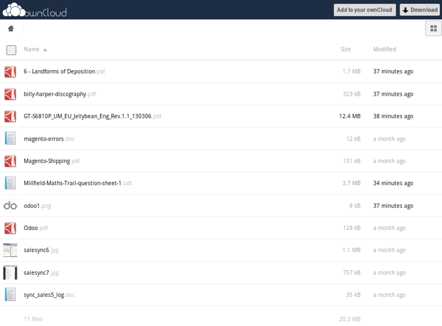

Owncloud Directory Naming Convention¶
The names of the directory in owncloud are named by the Odoo model responsible for the Odoo form. For instance, the model responsible for the Leads screen is crm.lead, therefore the directory will be name ‘crm_lead’, swapping the period for an underscore. The appropriate group access will be granted to this directory (no access is granted to any parent directory), and the ‘can share’ and ‘can edit’ checkboxes will be ticked.

The subdirectories will be named based on the record you are currently viewing. Each record has a unique Repository ID, which is visible on the form. The Owncloud-Connect application is currently configured to work from the following modules:
- Employees
- Sales
- Contacts
- Leads
- Opportunities
- Projects
Kindly contact the developer, if configuration for other areas are requried.
Once the Owncloud settings have been entered and verified in the user preferences, click on the ‘Action’ pulldown of the appropriate form, and select “List Owncloud Dir...”.

This will create a share link URL for the owncloud directory and display its content.
You may drill down to any related sub-directories from the share link URL. You may also send the link to another person via e-mail etc.